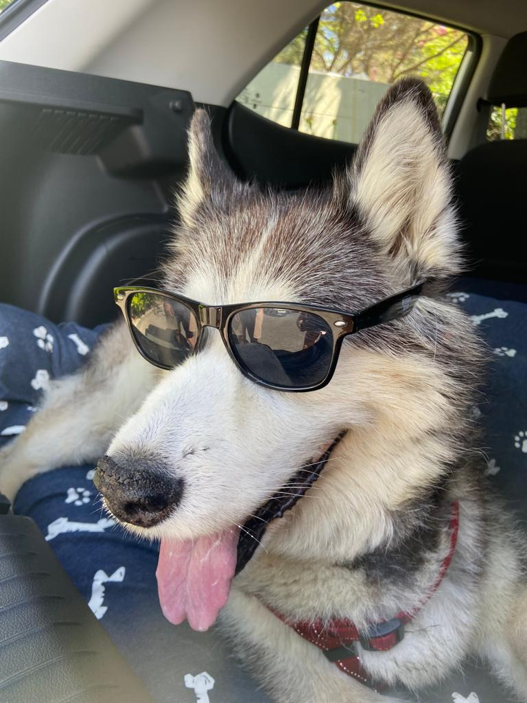

Willow Nel

Willow is 13 years old and she is a Siberian Husky. She has been in the family since I was in
grade 4. She has a beautiful black and white coat and also amazing shades. Believe it or not,
but her favorite toy is an empty 2L bottle. Not many people know this about Siberian Huskies,
but they have 2 coats of hair. One for winter and one for summer, so when it is summer, she
actually sheds her hair. That way her body is adjusting to the heat. She never bites, she only
likes to give out kisses to anybody who come and visit. She will always be my special girl and
best friend.